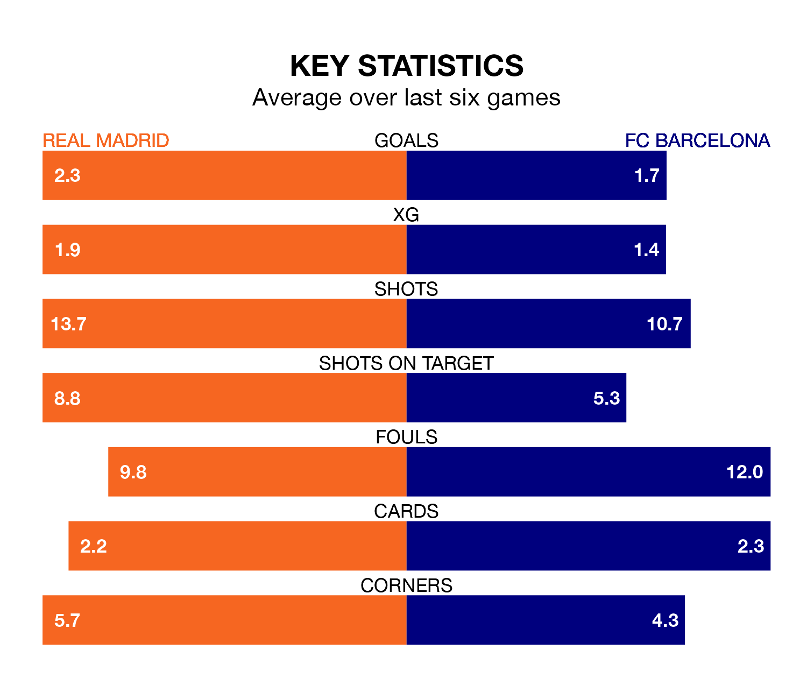

La Liga's top two sides face each other at the Estadio Santiago Bernabéu in Sunday's late kick-off, when Real Madrid host second-placed FC Barcelona.
Madrid have picked up 23 wins and six draws from 30 games so far this season, and sit eight points above the visitors going into the 8pm match.
Barcelona, meanwhile, have won 20 and drawn seven, picking up 67 points.
With 66 goals in 30 games so far this season, Madrid are the league's highest scorers with 2.2 goals per game. And they are conceding fewer than average, letting in 20 goals at a rate of 0.7 per game.
Barcelona are also above average scorers, with 2.0 goals per game, compared to a league average of 1.3. They have conceded 1.1 goals per game.
In Jude Bellingham, the home team have the league's sharpest shooter so far this season. He has notched 16 goals in 23 appearances.
His goal rate of one every 123 minutes is quicker than that of Robert Lewandowski, Barça's top scorer with a goal every 172 minutes, and a total of 13 goals in 28 games.
Madrid are in good form in La Liga, with four wins and two draws from their last six games.
But with five wins and a draw over that period, the visitors' form is even better – they have taken 16 points from 18, compared to Madrid's 14.
In the last 10 years, Madrid and Barcelona have played each other on 31 occasions. Madrid won 13 of them, Barcelona 14, and they drew four times.
On average, Madrid scored 1.5 goals and Barcelona 1.7 in those matches.
Their last meeting was on January 14, when Madrid won 4-1 at home.
Madrid's last match was on March 31, a 2-0 win against Athletic Club Bilbao, with Rodrygo getting the goals for Madrid.
Barcelona beat UD Las Palmas 1-0 last time out, on March 30, with Raphinha on the scoresheet.
Updated: 10:01 (UTC), 12/04/24